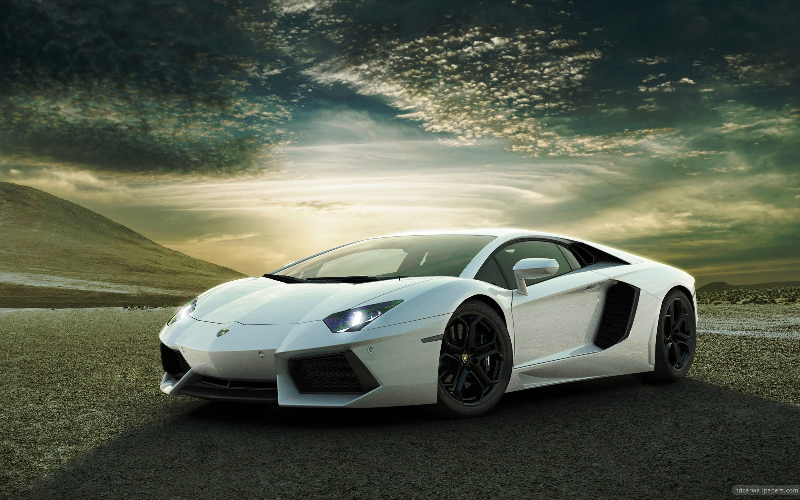

Lamborghini
Manufacturing magnate Italian Ferruccio Lamborghini founded the company in 1963 with the objective of producing a refined grand touring car to compete with offerings from established marques such as Ferrari. The company's first models were released in the mid-1960s and were noted for their refinement, power and comfort. Lamborghini gained wide acclaim in 1966 for the Miura sports coupé, which established rear mid-engine, rear wheel drive as the standard layout for high-performance cars of the era. Lamborghini grew rapidly during its first ten years, but sales plunged in the wake of the 1973 worldwide financial downturn and the oil crisis. Ferruccio Lamborghini sold ownership of the company to Georges-Henri Rossetti and René Leimer and retired in 1974. The company went bankrupt in 1978, and was placed in the receivership of brothers Jean-Claude and Patrick Mimran in 1980. The Mimrans purchased the company out of receivership by 1984 and invested heavily in the company's expansion. Under the Mimrans' management, Lamborghini's model line was expanded from the Countach to include the Jalpa sports car and the LM002 high performance off-road vehicle. The Mimrans sold Lamborghini to the Chrysler Corporation in 1987. After replacing the Countach with the Diablo and discontinuing the Jalpa and the LM002, Chrysler sold Lamborghini to Malaysian investment group Mycom Setdco and Indonesian group V'Power Corporation in 1994. In 1998, Mycom Setdco and V'Power sold Lamborghini to the Volkswagen Group where it was placed under the control of the group's Audi division. New products and model lines were introduced to the brand's portfolio and brought to the market and saw an increased productivity for the brand Lamborghini. In the late 2000s, during the worldwide financial crisis and the subsequent economic crisis, Lamborghini's sales saw a drop of nearly 50 percent. Manufacturing magnate Italian Ferruccio Lamborghini founded the company in 1963 with the objective of producing a refined grand touring car to compete with offerings from established marques such as Ferrari. The company's first models were released in the mid-1960s and were noted for their refinement, power and comfort. Lamborghini gained wide acclaim in 1966 for the Miura sports coupé, which established rear mid-engine, rear wheel drive as the standard layout for high-performance cars of the era. Lamborghini grew rapidly during its first ten years, but sales plunged in the wake of the 1973 worldwide financial downturn and the oil crisis. Ferruccio Lamborghini sold ownership of the company to Georges-Henri Rossetti and René Leimer and retired in 1974. The company went bankrupt in 1978, and was placed in the receivership of brothers Jean-Claude and Patrick Mimran in 1980. The Mimrans purchased the company out of receivership by 1984 and invested heavily in the company's expansion. Under the Mimrans' management, Lamborghini's model line was expanded from the Countach to include the Jalpa sports car and the LM002 high performance off-road vehicle. The Mimrans sold Lamborghini to the Chrysler Corporation in 1987. After replacing the Countach with the Diablo and discontinuing the Jalpa and the LM002, Chrysler sold Lamborghini to Malaysian investment group Mycom Setdco and Indonesian group V'Power Corporation in 1994. In 1998, Mycom Setdco and V'Power sold Lamborghini to the Volkswagen Group where it was placed under the control of the group's Audi division. New products and model lines were introduced to the brand's portfolio and brought to the market and saw an increased productivity for the brand Lamborghini. In the late 2000s, during the worldwide financial crisis and the subsequent economic crisis, Lamborghini's sales saw a drop of nearly 50 percent.
